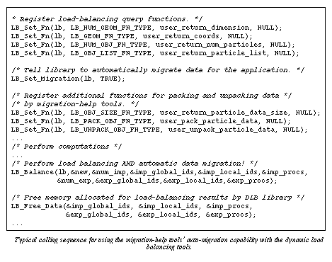
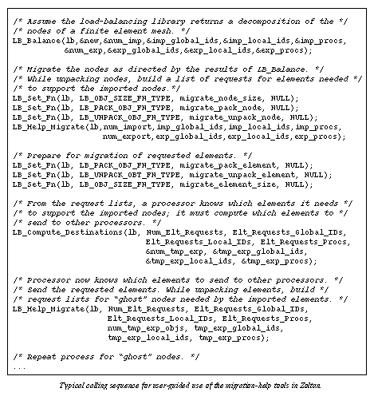

Migration Examples
Data migration using Zoltan's migration-help tools can be accomplished
in two different ways:
auto-migration, or
user-guided migration.
The choice of migration method depends upon the complexity of the application's
data. For some applications, only the objects used in balancing must be
migrated; no auxiliary data structures must be moved. Particle simulations
are examples of such applications; load balancing is based on the number
of particles per processor, and only the particles and their data must
be moved to establish the new decomposition. For such applications, Zoltan's
auto-migration tools can be used. Other applications, such as finite element
methods, perform load balancing on, say, the nodes of the finite element
mesh, but nodes that are moved to new processors also need to have their
connected elements moved to the new processors, and migrated elements may
also need "ghost" nodes (i.e., copies of nodes assigned to other processors)
to satisfy their connectivity requirements on the new processor. This complex
data migration requires a more user-controlled approach to data migration
than the auto-migration capabilities of Zoltan can provide.
Auto-Migration Example
In the figure below, an example
of the load-balancing calling sequence for a particle simulation using
Zoltan's auto-migration tools is shown. The application registers the geometric
query functions that will be used by the load-balancing algorithm. It also
requests auto-migration through a call to LB_Set_Migration
and registers functions to pack and unpack a particle's data. During the
call to LB_Balance,
the load-balancing library computes the new decomposition and, using calls
to the packing and unpacking query functions, automatically migrates particles
to their new processors. The application then frees the arrays returned
by LB_Balance and
can continue computation without having to perform any additional operations
for data migration.

User-Guided Migration Example
In the following figure,
an example of user-guided migration using Zoltan's migration-help tools
for a finite element application is shown. Several migration steps are
needed to completely rebuild the application's data structures for the
new decomposition. On each processor, newly imported nodes need copies
of elements containing those nodes. Newly imported elements, then, need
copies of "ghost" nodes, nodes that are in the element but are assigned
to other processors. Each of these entities (nodes, elements, and ghost
nodes) can be migrated in separate migration steps using the functions
provided in the migration-help tools.First, the assignment of nodes to
processors returned by LB_Balance
is established. Query functions that pack and unpack nodes are registered
and LB_Help_Migrate
is called using the nodal decomposition returned from LB_Balance.
LB_Help_Migrate
packs the nodes to be exported, sends them to other processors, and unpacks
nodes received by a processor. The packing routine migrate_node_pack
includes with each node a list of the element IDs for elements containing
that node. The unpacking routine migrate_node_unpack examines the
list of element IDs and builds a list of requests for elements the processor
needs but does not already store. At the end of the nodal migration, each
processor has a list of element IDs for elements that it needs to support
imported nodes but does not already store. Through a call to LB_Compute_Destinations,
each processor computes the list of elements it has to send to other processors
to satisfy their element requests. Packing and unpacking routines for elements
are registered, and LB_Help_Migrate
is again used to move element data to new processors. Requests for ghost
nodes can be built within the element packing and unpacking routines, and
calls to LB_Compute_Destinations
and LB_Help_Migrate,
with node packing and unpacking, satisfy requests for ghost nodes. In all
three phases of migration, the migration-help tools handle communication;
the application is responsible only for packing and unpacking data and
for building the appropriate request lists.

[Table of Contents |
Next: Future Work | Previous:
Load-Balancing Example]